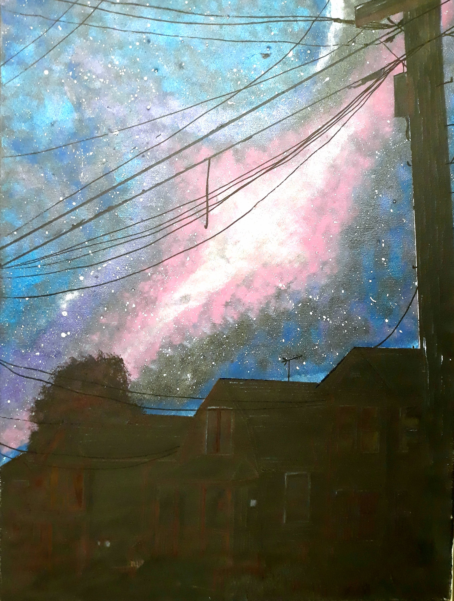
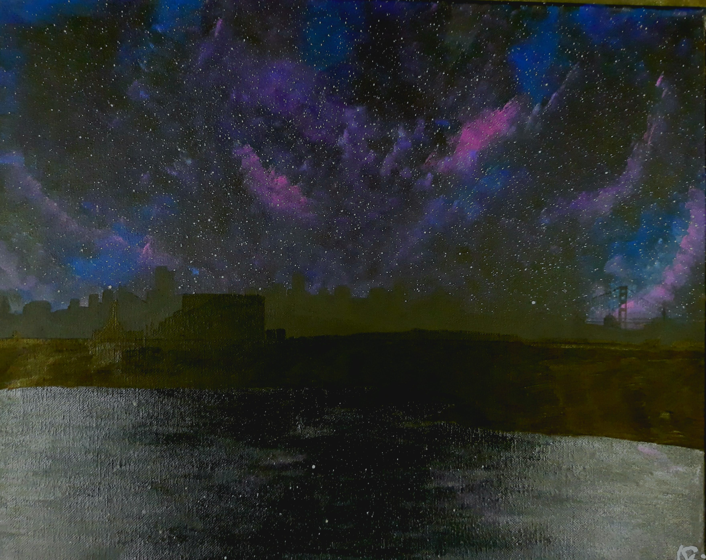
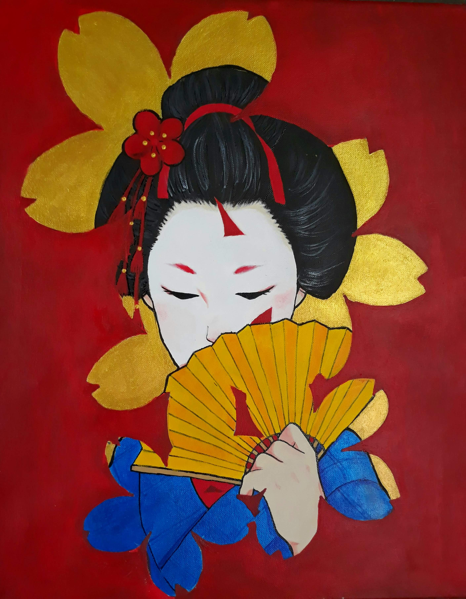
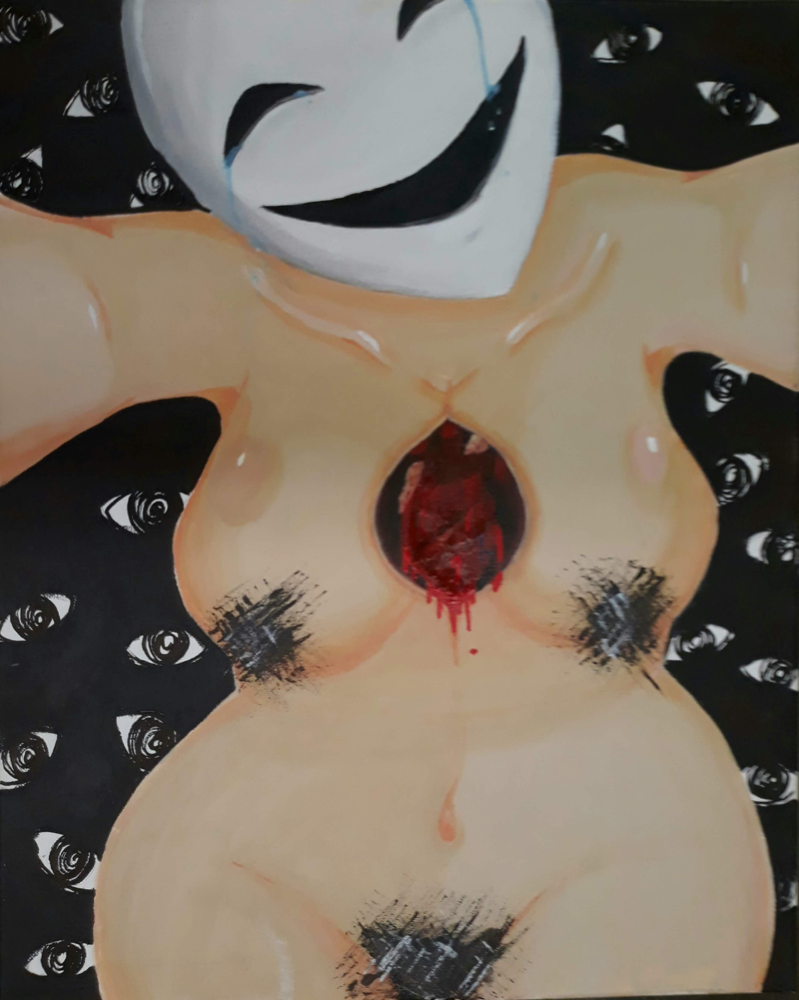

Ariana Rojas
Paintings Portfolio

Happy place
Acrylic on Canvas
A look at my deep subconcious. This painting potrays me but just as a balck silhouette while being surrounded by brightly colors. This was done in order to show how not just me but many others don't like to show their true emotions.
25th ave
Alameda Point
Galaxy Series
Acrylic on Canvas
These Paintings came to idea when I remembered a statement my science teacher told us about light pollution. Explaining how if there was less light we would be able to see more stars in our sky. for a project, I had to do a landscape painting, but I was never a big fan of landscape so I decided to take my own twist and instead did silhouette of the landscape and making the sky full with stars. Depicting places I am close too as well as showing my love for space.

Oni
Acrylic on Canvas
This Painting depicts the traditional Oni mask that is well known in the country of japan. this mask is said to be known for the underworld. Similar to devils known in other countries. I wanted to paint this mask surrounded by the japanese flowers O higan, a flower that represents death, in order to represent the underworld and it's connection to death. Making the flowers wilt at the end.
Geisha
Acrylic On Canvas
This painting was inspired from the geishas you find around traditional prefectures in Japan. I always find it fascinating the way Japan still holds traditions in it's country, especially the geishas. I really enjoy the elegance geisha's hold and present amongst locals and tourists a like. the way they compose themselves and keep themselves reserved is something I wanted to paint.
Nude
Acrylic On Canvas
A painting that came to mind while I was in a dark place, and wanted to adress an issue that many others could relate to. The growing problem of women being labeled for their bodies and always being targeted for it. In this generation many women have sent explicit images of themselves and not knowing the consequences of doing so. The chances of other eyes looking at her bare body that is only meant to be seen by her. Forcing to be okay with it.